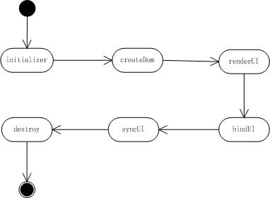
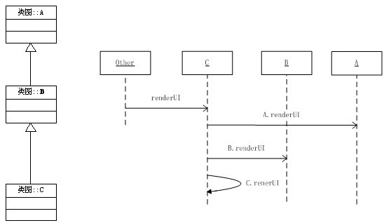

控件生命周期

导引
欢迎使用BUI！在这一章节里，我们将学习以下内容:
- 生命周期的组成
- 控件的生成过程
- 控件的销毁过程
- 控件生命周期中的事件
- 难度：中级
- 版本：1.0
控件的生命周期
控件在页面上的生命周期需要有统一的过程，在BUI的控件实现中，具体的环节如下图所示：

上面6个环节贯穿于整个BUI的所有控件，所有的控件都是按照这个生命周期，创建、绑定事件、操作和删除的，在接下来的章节里我们会详细的介绍这些环节在继承、扩展、插件中如何实现统一管理的，也会让大家学习到一种非常自然的方式编写扩展控件。
上面的6个环节主要分为2类，生成和销毁，中间的操作过程我们不在本章介绍。
控件的基类
前面的5步都与生成有关，但是侧重点各不相同，后面的环节都依赖于前面环节的完成。在具体的讲各个步骤前我们先来看BUI的基础控件的类图：

- BUI所有的UI控件的顶层都是Obseverble类，使的所有的控件有事件功能，详细信息参看：事件和方法章节
- 接下来的一个抽象类是属性类： Base，统一管理控件的属性，并负责通知控件属性发生改变，引起控件的DOM发生变化，详细信息查看：配置和属性，以及控件的配置和属性
- 然后是UIBase类，也是本章介绍的主要内容，主要是用于管理控件的生命周期的类，它同时管理继承、扩展和插件的生命周期，本周后面会详细介绍。
- 最后是Controller和View类，遵循MVC的原则，将控件的控制层和视图层分离，Controller负责控件的逻辑，View负责控件DOM的渲染和变化，它们之间的关系，我们会在Controller类和View类中介绍。
UIBase类
UIBase类继承于Base类，支持事件和属性，这个类主要的功能就是管理控件的生命周期，我们首先来看控件的生成环节
控件生成
- initializer :初始化，主要是将配置信息转换为属性，这个过程可以参考配置和属性
- createDom : 创建DOM，如果控件支持模板，则将模板和配置信息合并后，生成DOM
- renderUI : 在创建完成的DOM上设置状态，包括样式、属性等，也可以补充一些DOM，如果存在子控件，就去创建子控件。
- bindUI ：绑定事件，需要监听控件的事件在这个环节处理，往往包括监听自己的DOM事件，监听其他控件的事件
- syncUI ：将用户配置项和控件的默认值同步到控件上，例如用户设置的宽度、高度等属性
syncUI 的一些工作和 renderUI 有相似之处，但是最重要的区别在于，renderUI中添加的控件的状态等信息是在控件的内部代码中实现的，是一些特例，bindUI时可能需要这些状态。
继承
控件在生成过程中上面的这些方法，子类的方法不会覆盖父类的函数执行，也就是说：父类子类都定义了renderUI方法，都会执行
控件在render的过程中，initializer,createDom,renderUI,bindUI和syncUI的调用，都是先调用父类的方法，再调用子类的方法:

扩展
我们使用mixin的方式来扩展控件（参看类的创建及继承章节），为了使得各个扩展的方法不受影响和覆盖父类的方法，在扩展上实现的上面几种方法，以__2个下划线开始，如__bindUI,我们来看一下具体的执行过程
扩展在BUI控件中的用法在后面的章节里面使用mixin学习到，如果感觉到理解困难可以先跳过这部分内容。
插件(plugin)
控件的插件也有 initializer,createDom,renderUI,bindUI和syncUI 方法，在控件执行完对应的方法后执行，具体的实现方式，后面的章节里也会介绍。
控件的移除
我们使用destroy方法来移除控件，但是在控件、扩展或者插件中使用destructor，__destructor方法来实现，然而调用destructor的顺序跟其他几个方法有显著的差别：子类 destructor -> 子类扩展 destructor -> 父类 destructor -> 父类扩展 destructor
事件
在控件的创建过程中会触发以下事件：
- beforeCreateDom,beforeRenderUI,beforeBindUI,beforeSyncUI
- afterCreateDom,afterRenderUI,afterBindUI,afterSyncUI
API
下面只是简单的列表，未显示从父类继承来的方法，详细信息请查看API文档
下一步学习
学完本章后，你可以继续学习Controller 类和View 类更深入的了解控件的创建和移除